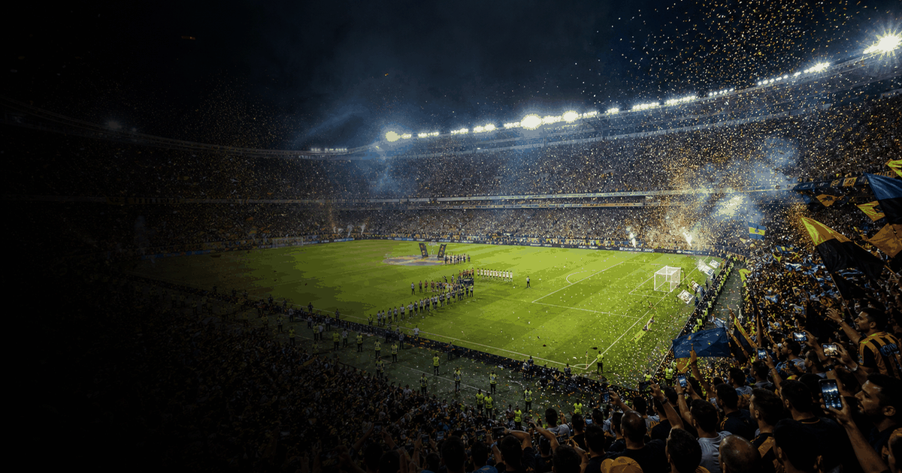

Copa Libertadores Final
First final1960
Current finalMontevideo
Top 4 title leaders
More footballFootball topicMore finals, tournaments and calendar moments.
Copa Libertadores Final 2026 in Montevideo
Copa Libertadores Final guide
Copa Libertadores Final belongs in the sport, football, copa libertadores final collection on OneSliders. Use this page as the compact evergreen entry point: start with what the event is, then scan the current edition details, location cues, schedule context and links back into the wider topic. The page is kept short by design, but it should still give enough unique context to distinguish this event from nearby fixtures, annual editions and broader category listings.